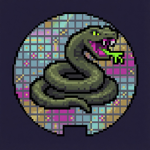

sss
Squalor Semiconductor Suite (sss): a testing executive for automated data collection, with tools for plotting and automated reporting, on shared backend libraries.
C# · Apache-2.0
Not public yet
This page collects the public project surface for Squalor LLC. Some repos are more mature than others, but together they show the same bias toward practical workflows, useful automation, and technical tools that solve real problems.

Squalor Semiconductor Suite (sss): a testing executive for automated data collection, with tools for plotting and automated reporting, on shared backend libraries.
C# · Apache-2.0
Not public yet
Local roadmap and slice tracking for a review, slice, implement, and done loop. Canonical state is git-tracked JSON under `.slicer/`, rendered to markdown, and a coding agent can work bounded slices through commands with JSON output. It uses the Python standard library only and does not call an AI service.
Python · Apache-2.0
Turns Markdown into PDF or standalone HTML with Pandoc and WeasyPrint. A plain stylesheet is built in, and separate profiles carry branding, letterheads, and confidentiality marks. Builds use local files and make no network requests.
Python · MIT
Versatile data handling library for test executive applications. It is intended to support import/export across formats like CSV, Parquet, SQLite, archives, and `.ball`, along with metadata, relationships, DataFrame-style operations, and large dataset handling. It is heavily work-in-progress and likely to change substantially.
C# · Apache-2.0
A .NET library with a small CLI for generating synthetic CSV datasets, building ordered sweep datasets for test and characterization flows, reversibly obfuscating CSV data, and restoring obfuscated data from a manifest.
C# · MPL-2.0
Local-first audio transcription, structured summarization, OCR note capture, and semantic recall. The pipeline includes WhisperX transcription, speaker diarization, Ollama-based summarization, OCR to markdown, semantic indexing with ChromaDB, and query across transcripts, summaries, and image notes.
Python · MPL-2.0
A simple but capable app for tracking events and maintaining daily streaks. It supports reminders, streak tracking, and detailed stats, with locally stored and encrypted data for privacy.
Kotlin · MPL-2.0
Real-time black hole visualizations in the browser. Artistic WebGL demos, including Sagittarius A* and a binary merger, run on desktop and mobile with touch-friendly controls.
JavaScript · MPL-2.0
The GitHub organization remains the best place to see what is public right now, including utility projects, experiments, and whatever moves from internal use into open tooling over time.